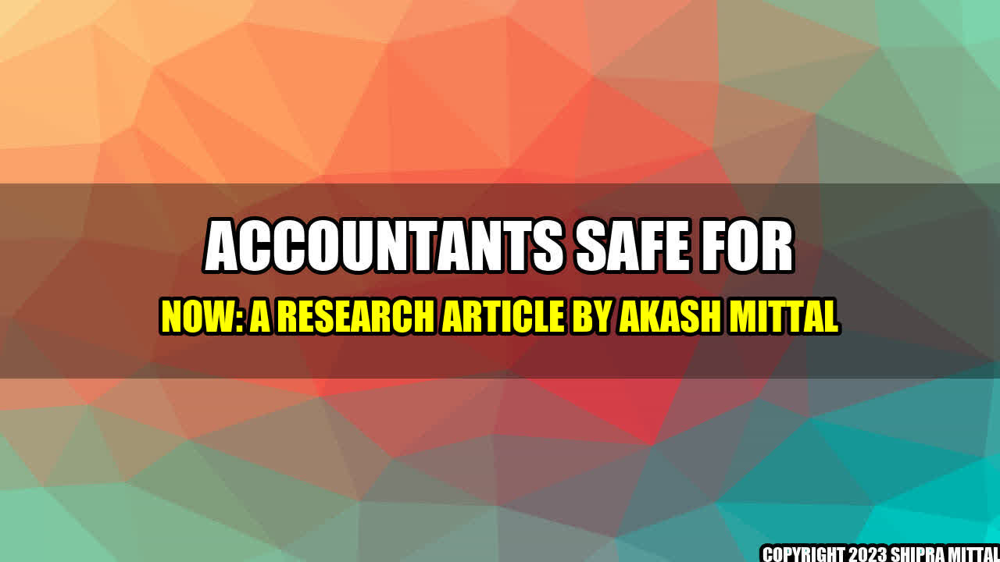

Accountants Safe for Now
Accountants all over the world can breathe a sigh of relief as the threat of automation and artificial intelligence taking over their jobs seems to have been overestimated. According to a recent report, accountant roles are relatively safe from AI displacing workers, unlike other fields such as manufacturing and low-skilled jobs.
Interestingly enough, machines have not been able to fully understand business rules and regulations, hence, the need for human accountants still prevails for now.
Real Life Examples
Two major accounting companies, Deloitte and KPMG, have already integrated AI into their systems to improve their efficiency and accuracy. However, they still rely on human expertise to address more complex issues and questions that require more than just data processing.
For instance, Deloitte uses a machine learning system called "Argus" that can read around 60,000 pages of contract data in a few seconds, identifying any potential risks and alerting the human team. KPMG uses an AI system called "KPMG Clara" that can process and analyze large amounts of data, freeing up time for their accountants to focus on more complex tasks.
These examples show that while automation may eliminate some basic accounting tasks, it cannot substitute the critical and creative thinking that accountants bring to the table, making their jobs indispensible for now.
Conclusion
- Accountants need not fear job displacement by automation and AI, at least for now.
- Automation can make some tasks easier and efficient, but real-life examples show that machines cannot fully replace the expertise and creative thinking of human accountants when complex issues arise.
- As technology continues to advance, the future of accounting may require more training, upskilling and cross-functional expertise, but human accountants will still have a place in the industry for a long time to come.
Akash Mittal Tech Article
Share on Twitter Share on LinkedIn